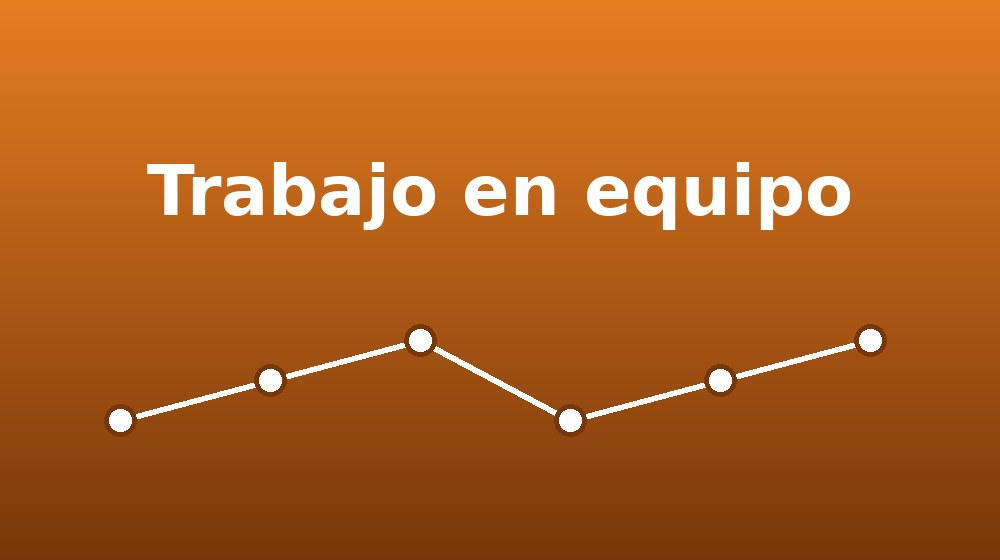
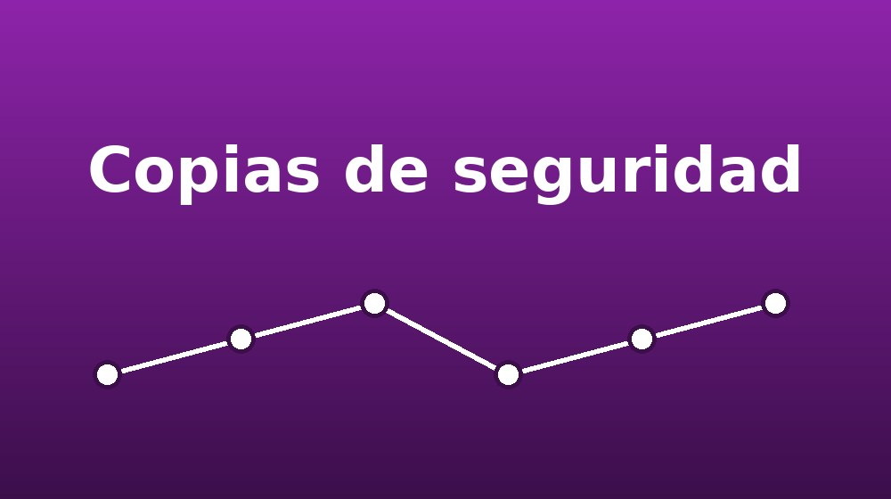

¿Qué es Git?
Git es un sistema de control de versiones distribuido. Registra los cambios que se hacen sobre los archivos de un proyecto para poder consultar o recuperar cualquier versión anterior en el momento que sea necesario.
Cada vez que guardamos un estado importante del proyecto creamos un commit, que funciona como una fotografía del trabajo con un mensaje que explica qué cambió y por qué.
Gracias a Git varias personas pueden trabajar sobre los mismos archivos sin pisarse entre sí, y el historial completo queda disponible para todo el equipo.
Dato útil: Git funciona en tu computadora; GitHub es el servicio en la nube donde se comparten los repositorios.
Historial de cambios
Cada commit guarda quién, cuándo y qué se modificó.

Trabajo en equipo
Varias personas colaboran sobre el mismo proyecto.

Copias de seguridad
El código queda a salvo en el repositorio remoto.